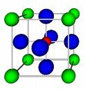

If clothing
is an extension of our private skins to store and channel our own heat and energy, housing
is a collective means of achieving the same end for the family or the group. Housing as
shelter is an extension of our bodily heat-control mechanisms—a collective skin or
garment. Cities are an even further extension of bodily organs to accommodate the needs of
large groups. Many readers are familiar with the way in which James Joyce organized Ulysses
by assigning the various city forms of walls, streets, civic buildings, and media to
the various bodily organs. Such a parallel between the city and the human body enabled
Joyce to establish a further parallel between ancient Ithaca and modern Dublin, creating a sense of human unity in depth, transcending
history.
Baudelaire
originally intended to call his Fleurs du Mal, Les Limbes, having in mind the city
as corporate extensions of our physical organs. Our letting-go of ourselves,
self-alienations, as it were, in order to amplify or increase the power of various
functions, Baudelaire considered to be flowers of growths of evil. The city as
amplification of human lusts and sensual striving had for him an entire organic and
psychic unity.
Surrounded by enemies and by dangerous and even hostile magical forces,
[tribal man] experiences the tribal community as a child experiences his family and his
home. (Karl R. Popper)
Literate
man, civilized man, tends to restrict and enclose space and to separate functions, whereas
tribal man had freely extended the form of his body to include the universe. Acting as an organ of the cosmos, tribal man
accepted his bodily functions as modes of participation in the divine energies. The
human body in Indian religious thought was ritually related to the cosmic image, and this
in turn was assimilated into the form of house. Housing was an image of both the body and
the universe for tribal and nonliterate societies. The building of the house with its
hearth as fire-altar was ritually associated with the act of creation. This same ritual
was even more deeply embedded in the building of the ancient cities, their shape and
process having been deliberately modeled as an act of divine praise. The city and the home
in the tribal world (as in China and India today) can be accepted as iconic embodiments of
the word, the divine mythos, the universal aspiration. Even in our present
electric age, many people yearn for this inclusive strategy of acquiring significance for
their own private and isolated beings.
Mechanistic-specialist societies discard traditional values, e.g. the unisex
straightjacket promoted by the secular progressives.
Literate
man, once having accepted an analytic technology of fragmentation, is not nearly so
accessible to cosmic patterns as tribal man. He prefers separateness and compartmented
spaces, rather than the open cosmos. He becomes less inclined to accept his body as a
model of the universe, or to see his house—or any other of the media of
communication, for that matter—as a ritual extension of his body. Once men have
adopted the visual dynamic of the phonetic alphabet, they begin to lose the tribal man's
obsession with cosmic order and ritual as recurrent in the physical organs and their
social extension. Indifference to the cosmic, however, fosters intense concentration on
minute segments and specialist tasks, which is the unique strength of Western man. For the specialist is one who never makes small
mistakes while moving toward the grand fallacy.
Spectacular upswept eaves of Xianmei (Immortal Plum) Pavilion
Though they occur naturally in some crystalline structures, squares and rectangles are
considered bad feng shui.

Perovskite Crystal first
discovered in Ural Mountains
Men live in
round houses until they become sedentary and specialized in their work organization.
Anthropologists have often noted this change from round to square without knowing its
cause. The media analyst can help the anthropologist in this matter, although the
explanation will not be obvious to people of visual culture. The visual man, likewise,
cannot see much difference between the motion picture and TV, or between a Corvair and a
Volkswagen, for this difference is not between two visual spaces, but between tactile and
visual ones. A tent or a wigwam is not an enclosed or visual space. Neither is a cave nor
a hole in the ground. These kinds of space—the tent, the wigwam, the igloo, the
cave—are not "enclosed" in the visual sense because they follow dynamic
lines of force, like a triangle. When enclosed, or translated into visual space,
architecture tends to lose its tactile kinetic pressure. A square is the enclosure of a visual space; that
is, it consists of space properties abstracted from manifest tensions. A triangle follows
lines of force, this being the most economical way of anchoring a vertical object.
A square moves beyond such kinetic pressures to enclose visual space relations, while
depending upon diagonal anchors. This separation of the visual from direct tactile and
kinetic pressure, and its translation into new dwelling spaces, occurs only when men have
learned to practice specialization of their senses, and fragmentation of their work
skills. The square room or house speaks the language of the sedentary specialist, while
the round hut or igloo, like the conical wigwam, tells of the integral nomadic ways of
food-gathering communities.
If the history of ideas, i.e. the "new outlook," is a history of man's
extensions or tools, what extension accounts for the shift from the Old Testament concept
of an imperious God to the Christian belief in a loving God?
This entire
discussion is offered at considerable risk of misapprehension because these are,
spatially, highly technical matters. Nevertheless, when such spaces are understood, they
offer the key to a great many enigmas, past and present. They explain the change from
circular-dome architecture to gothic forms, a change occasioned by alteration in the ratio
or proportion of the sense lives in the members of a society. Such a shift occurs with the
extension of the body in new social technology and invention. A new extension sets up a
new equilibrium among all of the senses and faculties leading, as we say, to a "new
outlook"—new attitudes and preferences in many areas.
In the
simplest terms, as already noted, housing is an effort to extend the body's heat-control
mechanism. Clothing tackles the problem more directly but less fundamentally, and
privately rather than socially. Both clothing and housing store warmth and energy and make
these readily accessible for the execution of many tasks otherwise impossible. In making
heat and energy accessible socially, to the family or the group, housing fosters new
skills and new learning, performing the basic functions of all other media. Heat control
is the key factor in housing, as well as in clothing. The Eskimo's dwelling is a good
example. The Eskimo can go for days without food at 50 degrees below zero. The unclad
native, deprived of nourishment, dies in a few hours.
It may
surprise many to learn that the primitive shape of the igloo is, nonetheless, traceable to
the primus stove. Eskimos have lived for ages in round stone houses, and, for the most
part, still do. The igloo, made of snow blocks, is a fairly recent development in the life
of this stone-age people. To live in such structures became possible with the coming of
the white man and his portable stove. The igloo is an ephemeral shelter, devised for
temporary use by trappers. The Eskimo became a trapper only after he had made contact with
the white man; up until then he had been simply a food-gatherer. Let the igloo serve as an
example of the way in which a new pattern is introduced into an ancient way of life by the
intensification of a single factor—in this instance, artificial heat. In the same
way, the intensification of a single factor in our complex lives leads naturally to a new
balance among our technologically extended faculties, resulting in a new look and a new
"outlook" with new motivations and inventions.
In the
twentieth century we are familiar with the changes in housing and architecture that are
the result of electric energy made available to elevators. The same energy devoted to
lighting has altered our living and working spaces even more radically. Electric light
abolished the divisions of night and day, of inner and outer, and of the subterranean and
the terrestrial. It altered every consideration of space for work and production as much
as the other electric media had altered the space-time experience of society. All this is
reasonably familiar. Less familiar is the architectural revolution made possible by
improvements in heating centuries ago. With the mining of coal on a large scale in the
Renaissance, inhabitants in the colder climates discovered great new resources of personal
energy. New means of heating permitted the manufacture of glass and the enlargement of
living quarters and the raising of ceilings. The Burgher house of the Renaissance became
at once bedroom, kitchen, workshop, and sale outlet.
Once housing
is seen as group (or corporate) clothing and heat control, the new means of heating can be
understood as causing change in spatial form. Lighting, however, is almost as decisive as
heating in causing these changes in architectural and city spaces. That is the reason why
the story of glass is so closely related to the history of housing. The story of the
mirror is a main chapter in the history of dress and manners and the sense of the self.
Says Marlow of the native escort aboard his Congo River steamer in Heart of Darkness:
"I don't think a single one of them had any clear idea of time, as we at the end of
countless ages have. They still belonged to the beginnings of time—had no inherited
experience to teach them as it were…"
Recently an
imaginative school principal in a slum area provided each student in the school with a
photograph of himself. The classrooms of the school were abundantly supplied with large
mirrors. The result was an astounding increase in the learning rate. The slum child has
ordinarily very little visual orientation. He does not see himself as becoming something. He does not envisage distant goals and objectives.
He is deeply involved in his own world from day to day, and can establish no beachhead in
the highly specialized sense life of visual man. The plight of the slum child, via the TV
image, is increasingly extended to the entire population.
Clothing and
housing, as extensions of skin and heat-control mechanisms, are media of communication,
first of all, in the sense that they shape and rearrange the patterns of human association
and community. Varied techniques of lighting and heating would seem only to give new
flexibility and scope to what is the basic principle of these media of clothing and
housing; namely, their extension of our bodily heat-control mechanisms in a way that
enables us to attain some degree of equilibrium in a changing environment.
Modern
engineering provides means of housing that range from the space capsule to walls created
by air jets. Some firms now specialize in providing large buildings with inside walls and
floors that can be moved at will. Such flexibility naturally tends toward the organic.
Human sensitivity seems once more to be attuned to the universal currents that made of
tribal man a cosmic skin-diver.
It is not
only the Ulysses of James Joyce that testifies to this trend. Recent studies of the
Gothic churches have stressed the organic aims of their builders. The saints took the body seriously as the symbolic
vesture of the spirit, and they regarded the Church as a second body, viewing its
every detail with great completeness. Before James Joyce provided his detailed image of
the metropolis as a second body, Baudelaire had provided a similar "dialogue"
between the parts of the body extended to form the metropolis, in his Fleurs du Mal.
Electric
lighting has brought into the cultural complex of the extensions of man in housing and
city, an organic flexibility unknown to any other age. If color photography has created
"museums without walls," how much more has electric lighting created space
without walls, and day without night. Whether in the night city, the night highway, or the
night ball game, sketching and writing with light have moved from the domain of the
pictorial photograph to the live, dynamic spaces created by out-of-door lighting.
Not many
ages ago, glass windows were unknown luxuries. With light control by glass came also a
means of controlling the regularity of domestic routine, and steady application to crafts
and trade without regard to cold or rain. The world was put in a frame. With electric
light not only can we carry out the most precise operations with no regard for time or
place or climate, but we can photograph the submicroscopic as easily as we can enter the
subterranean world of the mine and of the cave-painters.
Lighting as
an extension of our powers affords the clearest-cut example of how such extensions alter
our perceptions. If people are inclined to doubt whether the wheel or typography or the
plane could change our habits of sense perception, their doubts end with electric
lighting. In this domain, the medium is the message, and when the light is on there is a
world of sense that disappears when the light is off.
But doesn't pure light have a spiritual or
symbolic "content"? E.g. the dramatic lighting effects used by Rembrandt.
Or, rather, the "content" of light is the entire visible world.
"Painting
with light" is jargon from the world of stage-electricity. The uses of light in the
world of motion, whether in the motorcar or the movie or the microscope, are as diverse as
the uses of electricity in the world of power. Light is information without
"content," much as the missile is a vehicle without the additions of wheel or
highway. As the missile is a self-contained transportation system that consumes not only
its fuel but its engine, so light is a self-contained communication system in which the
medium is the message.
A puzzling error. As anyone who has used a laser pointer knows, coherent light is well
within the visible light spectrum.
The recent
development of the laser ray has introduced new possibilities for light. The laser ray is
an amplification of light by intensified radiation. Concentration of radiant energy has
made available some new properties in light. The laser ray—by thickening light, as it
were—enables it to be modulated to carry information as do radio waves. But because
of its greater intensity, a single laser beam can carry as much information as all the
combined radio and TV channels in the United States. Such beams are not within the range
of vision, and may well have a military future as a lethal agents.
From the air
at night, the seeming chaos of the urban area manifests itself as a delicate embroidery on
a dark velvet ground. Gyorgy Kepes has developed these aerial effects of the city at night
as a new art form of "landscape by light through" rather than "light
on." His new electric landscapes have complete congruity with the TV image, which
also exists by light through rather than by light on.
The French
painter Andre Girard began painting directly on film before the photographic movies became
popular. In that early phase it was easy to speculate about "painting with
light" and about introducing movement into the art of painting. Said Girard:
I would not be surprised if, fifty years from
now, almost no one would pay attention to paintings whose subjects remain still in
their always too-narrow frames.
The coming
of TV inspired him anew:
Once I saw suddenly, in a control room, the
sensitive eye of the camera presenting to me, one after another, the faces, the
landscapes, the expressions of a big painting of mine in an order which I had never
thought of. I had the feeling of a composer listening to one of his operas, all scenes
mixed up in an order different from the one he wrote. It was like seeing a building from a
fast elevator that showed you the roof before the basement, and made quick stops at some
floors but not others.
Since that
phase, Girard has worked out new techniques of control for painting with light in
association with CBS and NBC technicians. The relevance of his work for housing is that it
enables us to conceive of totally new possibilities for architectural and artistic
modulation of space. Painting with light is a kind of housing-without-walls. The same
electric technology, extended to the job of providing global thermostatic controls, points
to the obsolescence of housing as an extension of the heat-control mechanisms of the body.
It is equally conceivable that the electric extension of the process of collective
consciousness, in making consciousness-without-walls, might render language walls
obsolescent. Languages are stuttering
extensions of our five senses, in varying ratios and wavelengths. An immediate simulation
of consciousness would by-pass speech in a kind of massive extrasensory perception,
just as global thermostats could by-pass those extensions of skin and body that we call
houses. Such an extension of the process of consciousness by electric simulation may
easily occur in the 1960s.